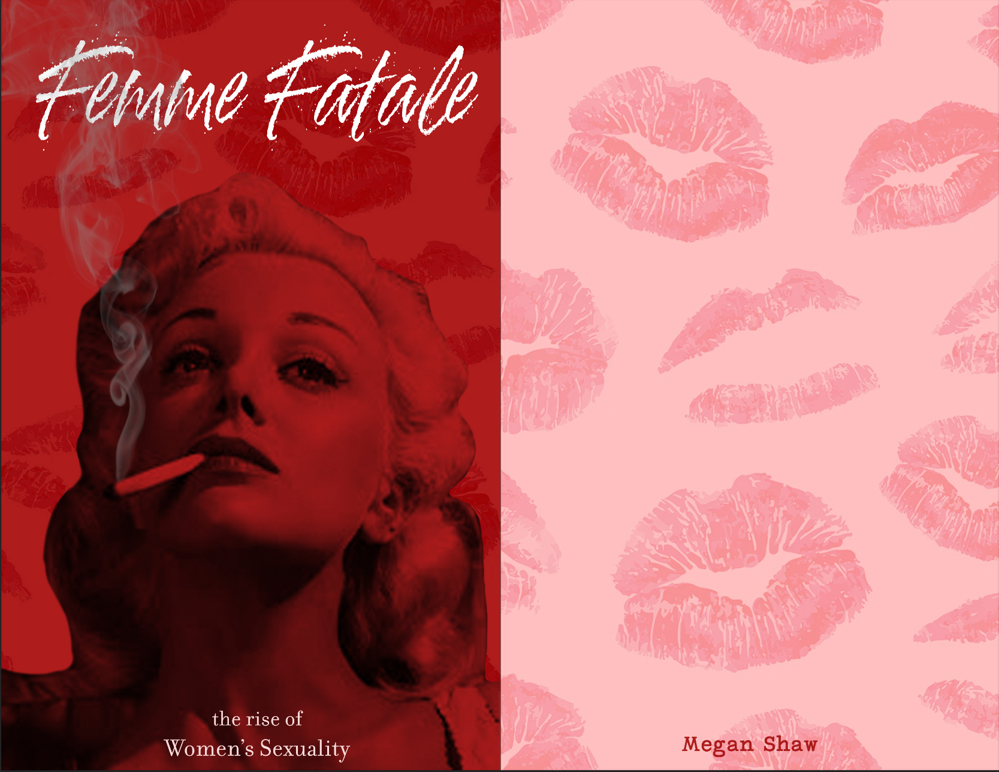
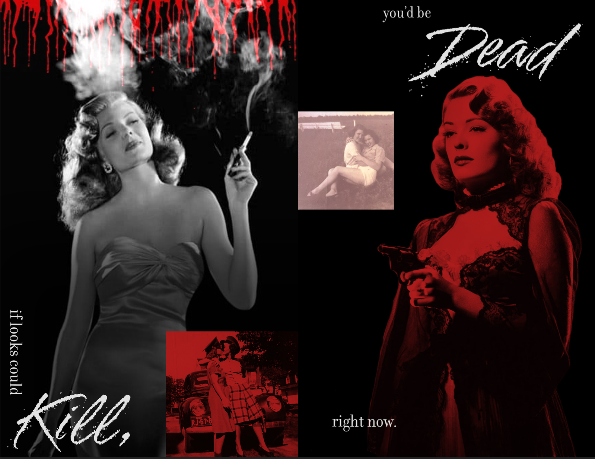
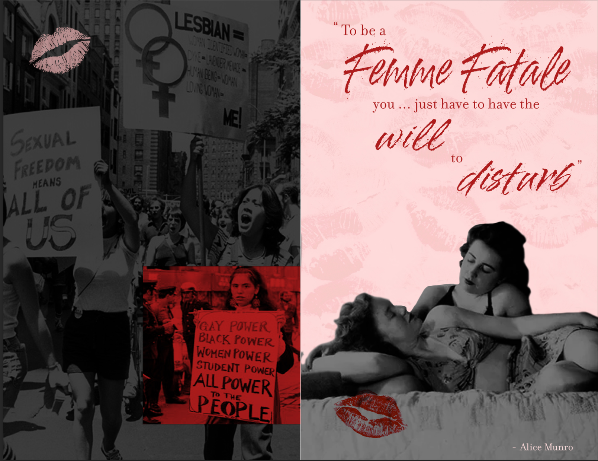
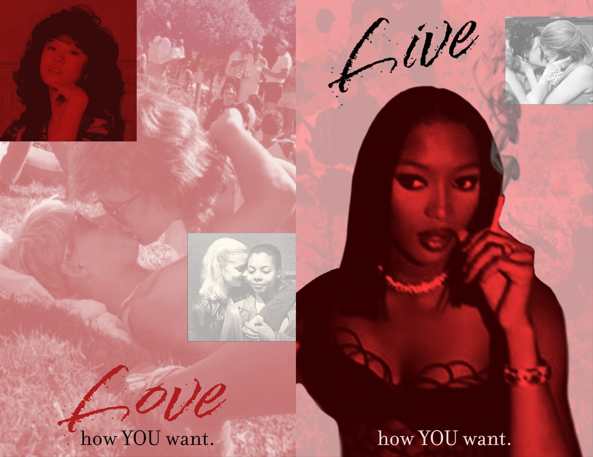

Femme Fatale
2026




I designed this zine (8.5 x 5.5") in order to explore how women's beauty standards and sexuality have evolved over time. I designed it to highlight one main idea, that a woman’s sexuality has always belonged entirely to her. Visually, the pages' color pallette transitions from red to pink. I chose this color shift to represent how the old stigma of the 'dangerous' empowered woman has gradually softened into something more accepted, a shift that I hope keeps growing.